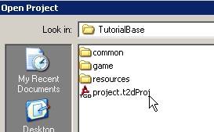
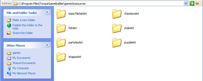
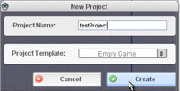
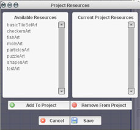
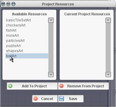
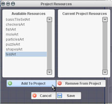
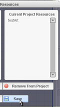

Torque 2D - Resource Tutorial
Torque 2D (T2D) offers many useful features designed to streamline workflow and improve usability. One feature is the ability to create an art resource. An art resource is basically a group of images, usually of similar theme, that are already set up in T2D for easy import. This includes both static and animated sprites. Resources are good for many reasons. First and foremost, they are very easy to import into a T2D project. Instead of individually importing images, the entire package is imported, properly set up, and named in just a few clicks . Secondly, since resources are not owned by any one project and are (ideally) modularized by theme, they become lego-like pieces that can be shared between many game projects easily. Finally, since it is not exclusive to any project, it allows developers to avoid having duplicate images in more than one project.
In this tutorial we are going to look at the process of creating and importing a resource.
To begin with we need to open up T2D. When T2D loads, go to FILE -> Open Project and find the project named games/TutorialBase/project.t2dproj (as shown in Figure 1). *Note: if you already have that project open, you will not see it in the open dialog.
|
 |
Once your project is open, you should see the create tab at the right filled with many different static and animated sprites. Now, though everything is already imported into this project, what if you wanted to use this art in a different project? You would have to copy the images into the new project's image folder and then individually import each graphic into the project, setting up its name and modes. However, thanks to our ability to create art resources in T2D, our lives are much simpler than that. We are going to turn the art in the TutorialBase project into a resource. |
First, we need to create a place for our art resource in the place where all of the other resources are. Navigate to your T2DInstallationDirectory\T2D\resources folder. Inside you should see all of the current art resources included in the engine (as shown in Figure 2).
|
 |
Inside this folder we are going to create our own folder for our art. So, create a new folder and name it testArt. Once you have created your folder, it is time to start piecing your resource together. |
Now that we have our folder set up for our art resource, let's get our images placed in the proper spot. Close T2D and navigate to your games\TutorialBase\game\data folder. Once you are there, copy the entire images folder. Once that folder is copied, navigate back to your testArt resource folder and paste your images folder into it. Now that we have our images folder in its proper place, there's one more thing we need to get our resource working correctly.
We need to add a file into our testArt folder. This file is going to contain all of the code that will get our images to import properly. For all resources, this file is named the same thing: resourceDatabase.cs. If you browse into any of the other resource folders you will undoubtedly see this file. You will need to copy one of these files and put it into your folder. If, for whatever reason, you have no other resources and therefore, no resourceDatabase.cs files, create one in any plain text editor. Add the following code into the file:
|
// Create Resource Descriptor $instantResource = new ScriptObject() { Class = "testArt"; Name = "testArt"; User = "T2D"; LoadFunction = "testArt::LoadResource"; UnloadFunction = "testArt::UnloadResource"; };
// Load Resource Function - Hooks into game function testArt::LoadResource( %this ) { // Update Object library once datablocks are loaded. GuiFormManager::BroadcastContentMessage( "LevelBuilderSidebarCreate", 0, "refresh" ); }
// Unload Resource Function - Remove from game Sim. function testArt::UnloadResource( %this ) { // We must clean up all the mess we've made in the Sim. if( isObject( %this.Data ) && %this.Data.GetCount() > 0 ) { while( %this.Data.getCount() > 0 ) { %datablockObj = %this.Data.getObject( 0 ); %this.Data.remove( %datablockObj ); if( isObject( %datablockObj ) ) %datablockObj.delete(); } } // Update Object library once datablocks are removed. GuiFormManager::BroadcastContentMessage( "LevelBuilderSidebarCreate", 0, "refresh" ); }
// Resource Data $instantResource.Data = new SimGroup() { canSaveDynamicFields = "1"; }; |
The following code sets up everything we will need to get our images loaded correctly. The only thing we lack is the actual datablock definitions for the images in our resource. Also, you will note that I have already given our resource the name and class of testArt. All of the namespace functions have the name testArt as well. This is useful to note since you need to make sure that every resource you create is named properly. So, in the instance that you were creating a planeArt resource, you would do a Find and Replace in your resourceDatabase.cs file and change all of the testArt references to planeArt. Anyways, once you have your resourceDatabase.cs file created and saved, we need to get the datablock definitions for the images you are including in your resource. These definitions can be found in your games\TutorialBase\game\managed folder in your datablocks.cs file. Open this file and find the following code:
|
$managedDatablockSet = new SimSet() { canSaveDynamicFields = "1"; internalName = "Datablocks"; |
Right below this code is all of the datablock definitions we will need for our resource. Copy everything below this code, except for the last line, which should look like this:
|
}; |
Everything else should be copied from that file. Once you have it copied, open your resourceDatabase.cs and find the following code (should be at the bottom of the file):
|
// Resource Data $instantResource.Data = new SimGroup() { canSaveDynamicFields = "1"; }; |
and paste your datablock definitions in the following place:
|
// Resource Data $instantResource.Data = new SimGroup() { canSaveDynamicFields = "1";
//PASTE DATABLOCK DEFINITIONS HERE }; |
Once you have your definitions pasted in the correct spot, save your resourceDatabase.cs file and open T2D back up. Our last step is going to be importing our resource into a new project.
When T2D opens up go to FILE -> New Project and create a new project named "testProject" (figure 3)
|
 |
This will create a new project with no images imported into it. To import our resource, type CTRL+R or click on PROJECT -> Resources. A resource dialog should pop up showing us all of the recognized resources in our Resources folder, including the one we just created (as shown in Figure 4). |
|
 |
To import our resource from this dialog, click on our resource (testArt), and click the Add to Project button. When you do this, our testArt resource should move to the Current Project Resources list. Once it moves there, click on the Save button to finish importing (as shown in Figure 5). |
|
 Figure 5 |
 |
 |
With that, our sprite library should be the same as the original T2D project: everything should be imported and named properly. If you ever want to remove a resource, simply bring up the resource dialog and work backwards, select the resource, click the remove button, and save. As you can see, a resource is not only convenient, its can be used to make workflow much more efficient. Have fun and good luck!
Revision 1.10